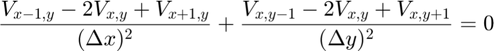
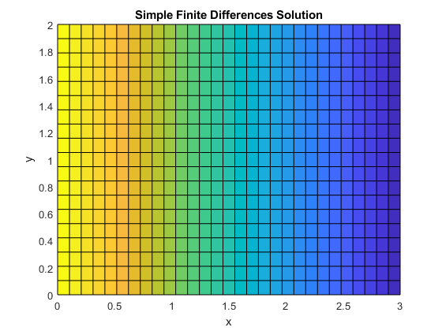

Assignmnet 2 Part 1 a) - Andrew Paul 100996250
The first section of this assignment invlolved solving a simple case of the Laplace equation where one end of a 2D grid is fixed at a voltage V0 on the x-axis and is set to zero at the other end with a uniform charge distribution.
The finite difference method was used to solve for the given case using the matrix solution technique of , where is the voltage solutions over the grid,  is the matrix which defines how each discrete votlage point is related to the neighbouring voltage values, and is the matrix which sets the boundary conditions. A simplified version of Lapalce's equation is used in order to sovle for the voltages, discrete approximations are used in order to calculate finite values.
is the matrix which defines how each discrete votlage point is related to the neighbouring voltage values, and is the matrix which sets the boundary conditions. A simplified version of Lapalce's equation is used in order to sovle for the voltages, discrete approximations are used in order to calculate finite values.

clear % Set the length and width of the grid and the voltage V0 L = 3; W = 2; V0 = 1; % Spacing and number of points of grid dx = 0.1; dy = 0.1; nx = L/dx; ny = W/dy; % Parameters of Laplace equation p1 = 1/(dx^2); p2 = 1/(dy^2); p3 = -2*(1/dx^2 + 1/dy^2); % Generate "G" Matrix G = zeros(nx*ny,nx*ny); for i = 2:nx-1 for j = 2:ny-1 % set indicies for all neighbouring points n = i + (j-1)*nx; nym = i + (j-2)*nx; nyp = i + j*nx; nxm = (i-1) + (j-1)*nx; nxp = (i+1) + (j-1)*nx; % Define values of G matrix G(n,n) = p3; G(n,nxm) = p1; G(n,nxp) = p1; G(n,nym) = p2; G(n,nyp) = p2; end end % Generate "F" Matrix F = zeros(nx*ny,1); % set boundary conditions for j = 1:ny n = 1 + (j-1)*nx; G(n,n) = 1; F(n) = V0; n1 = nx + (j-1)*nx; G(n1,n1) = 1; end for i = 2:(nx-1) n = i; G(n,n) = 1; n1 = i + nx; G(n,n1) = -1; n = i + (ny-1)*nx; n1 = i + (ny-2)*nx; G(n,n) = 1; G(n,n1) = -1; end % Finding solution and reshaping the transpose A = G\F; solution = reshape(A,[],ny)'; xrange = linspace(0,L,nx); yrange = linspace(0,W,ny); figure(1) surf(xrange,yrange,solution) xlabel('x') ylabel('y') zlabel('Voltage') title('Simple Finite Differences Solution') view(0,90)
The figure above shows that the distribution of voltage satifies the given conditions